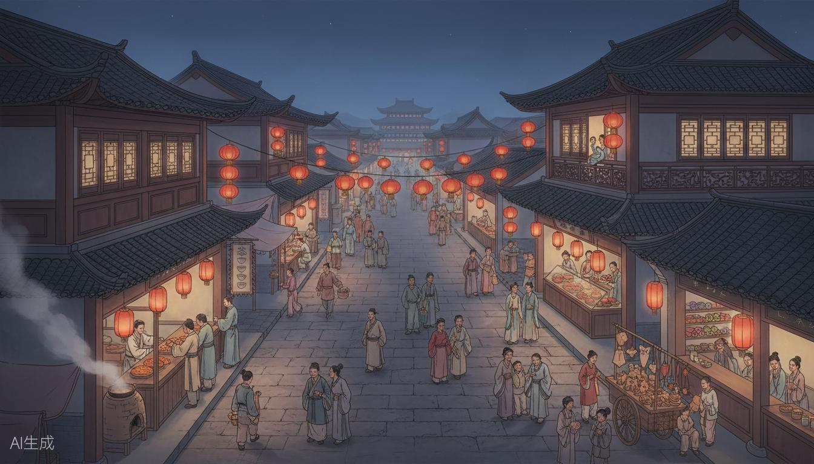

画卷馆藏
馆藏列表
关于馆藏
意见反馈
画卷馆藏
循古卷，识古人风物
入画探索
入画探索
六幅传世长卷 · 笔尖拂过，唤醒纸上颜色
返回首页
← 返回列表
图鉴
仕女妆扮
逛夜市
复位
滚轮缩放 · 方向键漫游 · 点击金圈进入场景
暂离剧场 ✕
继续
仕女妆扮
试运营 · 簪花种类与簪戴方式体验
返回长卷
簪花种类
簪戴位置
帔子颜色
裙上纹样
先为她簪一朵花吧——唐人以花入鬓，花时不同，簪的花也不同。
完成妆扮
入汴京夜市
先换些北宋银两在身上，再入市闲逛
您想揣多少银钱（以今日人民币计）：
兑换
入市闲逛
返回长卷
州桥夜市
余额：
0
文
返回长卷

曹婆婆肉饼
王婆茶肆
李记果子铺
孙家正店
赵记绸缎庄
周家玩具摊
点击灯笼标记，步入店铺
确定进入
再看看
余额：
0
文
退出店铺
✕
关于馆藏
GUAN HUA · 观古画
画卷馆藏以数字长卷的方式，徐徐展开一幅幅传世名画。不施浓艳，不堆砌喧哗， 只以宣纸为底、淡墨为引，邀您循古人笔意，入画中人境。
当前开放《清明上河图（仇英版）》完整体验：全景漫游、六个场景小剧场与图鉴收集。 其余五幅长卷暂提供漫游浏览，剧情玩法将陆续开放。
合上
✕
意见反馈
片纸短笺 · 随写随存
清空本地记录
投递